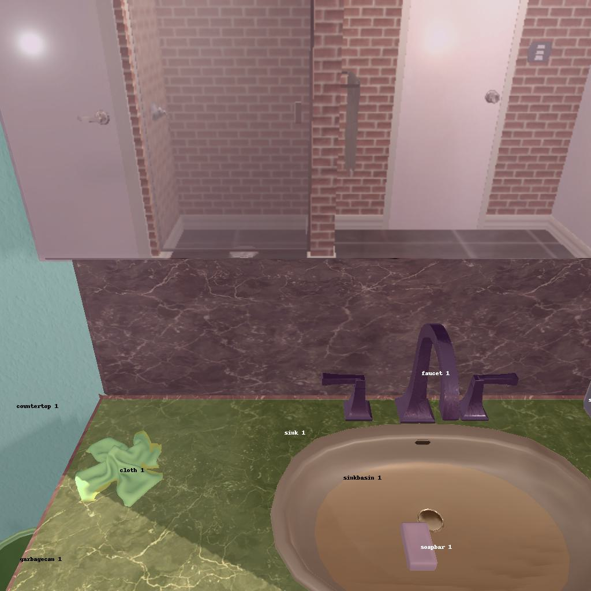

---------------------------------------------------------task: 27---------------------------------------------------------
--------------------------------------------------------------------------------------------------------------------------------------------------------------------
--------------------------------------------------------------------------------------------------------------------------------------------------------------------
Step:--------------------------------------------------------------------------16-------------------------------------------------------------------------------
----------------------------------------
VLM Prompt:
Image1:
Image2:
**Instruction**
1. Analyze the provided image to identify all visible household objects, focusing on those relevant to the task description "find two soapbottle and put them in garbagecan."
2. Use the analysis of the image and the task hint "The agent must find an object of the desired type, pick it up, find the correct location to place it, put it down there, then look for another object of the desired type, pick it up, return to previous location, and put it down there with the other object." to answer the question: what is the most reasonable action in the choices for the task description "find two soapbottle and put them in garbagecan"?
4. Decide and write the answer using the template: The answer is: (i): , where i is the real number. If there is no desired object in the image, search every place based on **Initial Observation** to find the object. And if no one is exactly correct, choose a similar answer.
**Initial Observation**
You are in the middle of a room. Looking quickly around you, you can see countertop (1), sinkbasin (1-2), sink (1-2), garbagecan (1), drawer (1-2), toilet (1), handtowelholder (1)
**Answer Choices**
(1): go to countertop 1
(2): go to sink 1
(3): go to garbagecan 1
(4): go to drawer 2
(5): go to sink 2
(6): go to sinkbasin 2
(7): go to toilet 1
(8): go to handtowelholder 1
(9): take faucet 1 from sinkbasin 1
(10): take cloth 1 from sinkbasin 1
(11): take soapbar 1 from sinkbasin 1
(12): take soapbottle 1 from sinkbasin 1
(13): examine sinkbasin 1
**Answer**
Let's think step by step by following the instructions.
----------------------------------------
----------------------------------------
Original Response:
First, we need to identify all visible household objects relevant to the task. In Image 1, we can see two soapbottles labeled "soapbottle 1" and "soapbottle 3". These are the objects we need for the task.
Next, we need to decide the most reasonable action based on the task hint. The first step is to find an object of the desired type, which we have identified as "soapbottle 1" and "soapbottle 3". Since "soapbottle 1" is closest to us (on sinkbasin 1), we should start with that.
Looking at the answer choices, the action that allows us to pick up the soapbottle is (12): take soapbottle 1 from sinkbasin 1.
Therefore, the answer is: (12): take soapbottle 1 from sinkbasin 1.
----------------------------------------
----------------------------------------
>>> Refine Original VLM Response and Get Pure Action: No action
----------------------------------------
-----------------------------------------------------------------
Running time: 24.97819495201111 seconds
Total Money: 13.728500000000006
-----------------------------------------------------------------
-----------------------------------------------------------------
Text Observation:Nothing happens.
-----------------------------------------------------------------
UNSUCCEED